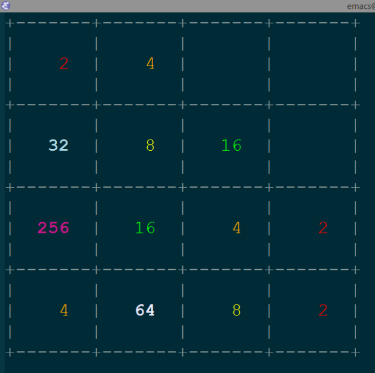

2048 in Emacs, and colours too
May 5th, 2014 - http://sachachua.com/blog/p/27182
While browsing through M-x list-packages, I noticed that there was a
new MELPA package that implemented the 2048 game in Emacs. I wrote the
following code to colorize it. Haven't tested the higher numbers yet,
but they're easy enough to tweak if the colours disagree with your
theme. =)

(defface 2048-2-face '((t (:foreground "red"))) "Face used for 2" :group '2048-game) (defface 2048-4-face '((t (:foreground "orange"))) "Face used for 4" :group '2048-game) (defface 2048-8-face '((t (:foreground "yellow"))) "Face used for 8" :group '2048-game) (defface 2048-16-face '((t (:foreground "green"))) "Face used for 16" :group '2048-game) (defface 2048-32-face '((t (:foreground "lightblue" :bold t))) "Face used for 32" :group '2048-game) (defface 2048-64-face '((t (:foreground "lavender" :bold t))) "Face used for 64" :group '2048-game) (defface 2048-128-face '((t (:foreground "SlateBlue" :bold t))) "Face used for 128" :group '2048-game) (defface 2048-256-face '((t (:foreground "MediumVioletRed" :bold t))) "Face used for 256" :group '2048-game) (defface 2048-512-face '((t (:foreground "tomato" :bold t))) "Face used for 512" :group '2048-game) (defface 2048-1024-face '((t (:foreground "SkyBlue1" :bold t))) "Face used for 1024" :group '2048-game) (defface 2048-2048-face '((t (:foreground "lightgreen" :bold t))) "Face used for 2048" :group '2048-game) (defvar 2048-font-lock-keywords '(("\\<2\\>" 0 '2048-2-face) ("\\<4\\>" 0 '2048-4-face) ("\\<8\\>" 0 '2048-8-face) ("\\<16\\>" 0 '2048-16-face) ("\\<32\\>" 0 '2048-32-face) ("\\<64\\>" 0 '2048-64-face) ("\\<128\\>" 0 '2048-128-face) ("\\<256\\>" 0 '2048-256-face) ("\\<512\\>" 0 '2048-512-face) ("\\<1024\\>" 0 '2048-1024-face) ("\\<2048\\>" 0 '2048-2048-face))) (defun sacha/2048-fontify () (font-lock-add-keywords nil 2048-font-lock-keywords)) (defun sacha/2048-set-font-size () (text-scale-set 5)) (use-package 2048-game :config (progn (add-hook '2048-mode-hook 'sacha/2048-fontify) (add-hook '2048-mode-hook 'sacha/2048-set-font-size)))